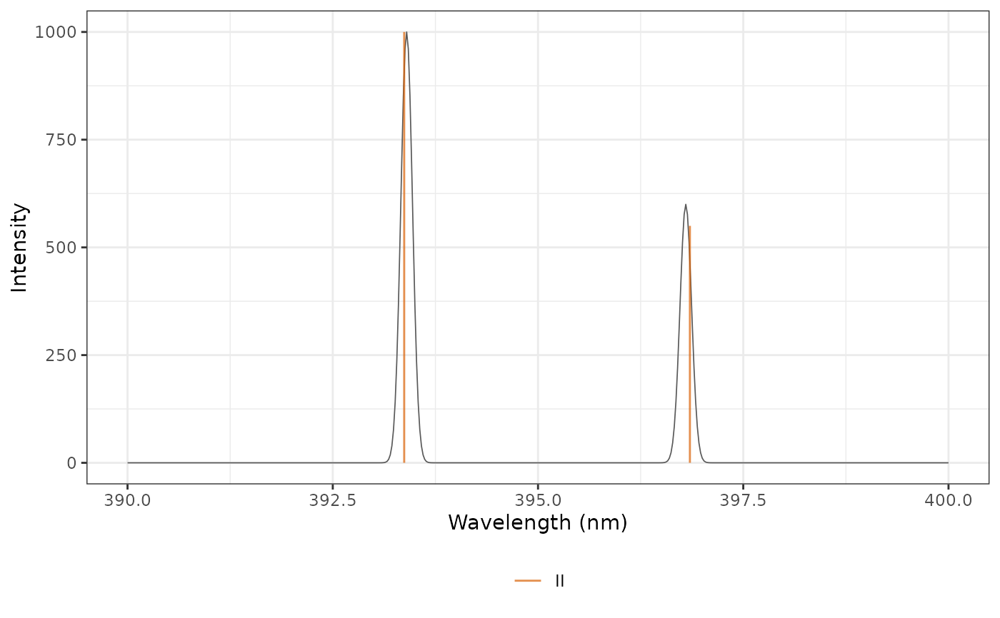

Plots a spectrum with vertical markers at the wavelengths of candidate emission lines, colored by ionization stage, to identify the lines of the spectrum.
Usage
plot_lines(
spectrum,
lines,
shift = 0,
scale_markers = TRUE,
interactive = TRUE,
title = NULL
)Arguments
- spectrum
A spectrum: a numeric vector named by wavelength, or a one-row matrix or data frame whose column names are the wavelengths. Average several spectra first.
- lines
A tibble returned by
libs_lines().- shift
A wavelength shift, in nm, added to the line wavelengths to correct the wavelength calibration of the spectrometer. Default is 0.
- scale_markers
A logical: scale the markers by the relative intensity of the lines (
TRUE, default) or draw them full height.- interactive
A logical: plotly (
TRUE, default) or ggplot2.- title
An optional plot title.
Details
With interactive = TRUE, the plot is made with plotly: the spectrum is
drawn with WebGL, the lines of each ionization stage form one trace that
can be shown or hidden from the legend, and hovering over a line shows its
species, wavelength, transition probability, upper-level energy and
accuracy grade. Otherwise, a ggplot is returned.
With scale_markers = TRUE, the height of each marker is its relative
intensity (see libs_lines()) times the maximum of the spectrum;
otherwise all markers span the full height.
Examples
# a synthetic spectrum and two made-up lines
wl <- seq(390, 400, by = 0.02)
spectrum <- setNames(1000 * exp(-(wl - 393.4)^2 / 0.01) + 600 * exp(-(wl - 396.8)^2 / 0.01), wl)
lines <- tibble::tibble(
species = "Ca II", element = "Ca", stage = 2L, wavelength = c(393.37, 396.85),
relative_intensity = c(1, 0.55), Aki = c(1.47e8, 1.4e8), Ek = c(3.15, 3.12),
gk = c(4, 2), accuracy = "C", lower = "4s 2S", upper = c("4p 2P* 3/2", "4p 2P* 1/2")
)
plot_lines(spectrum, lines, interactive = FALSE)
